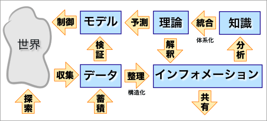
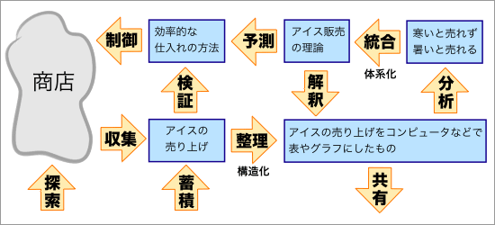

情報とは？
何らかの経路で受け手が受信する何ものかを情報という。一般に、情報は内容をともない、受け手に受信されたとき、受け手によってその価値が評価されるものである。
広義の「情報」と狭義の「情報」
広義では、受け手が受信したものはすべて「情報」である。一方、事象をモデル化する際に、データ（生データ）を構造化したものはインフォメーションと呼ばれる（下図参照）。ただし、この「インフォメーション」も「情報」と訳されることがある（狭義の「情報」）。

↑事象のモデル化の流れ

↑「商店でのアイスクリームの売上」に適用した例
事象のモデル化については、【→ 理論とモデル】を参照せよ。
データとは何か？
判断の基準や根拠になる事実をデータという。
論文は『事実に対する客観的な判断』（何が事実であるか／事実がどうであるか）を書くべきものである【参考→論文とは】。客観的な判断をしようとするときに、判断の基準や根拠となるのがデータなのである。なお、「客観的な判断」とは、学術的に公認された方法（＝科学的な方法）に基づく判断という意味である。
データの収集
論文が記述する『判断』の基準や根拠となるのがデータである。したがって、データの収集は、研究にとって重要である。研究を進めるためには、（有効な）データを（効率的に）収集する能力が必要となる。
データの収集には、２次元的な情報からのデータ収集と３次元的な情報からのデータ収集とが区別できる。
２次元的な情報からのデータ収集
２次元的な情報には、以下のようなものがある。
- 文字からの情報
- 公開を前提とする文書
- 公的な資料：法令や通達、官報や公報、政府・自治体の刊行物など
- その他の資料：書籍、（学術）雑誌、新聞、ウェブページ（ブログを含む）、日誌など
- 公開を前提としない文書（個人的な記録）：メモ、手紙やはがき、メール、チャットのログ、日記など
- 写真からの情報
- 公開されている写真：写真集、ウェブページ上の写真、フリー素材、オンラインアルバムなど
- 公開されていない写真：個人撮影の写真、プリクラなど
- 映像からの情報
- 公開されている映像：テレビ、映画、オンライン動画など
- 公開されていない映像：プライベートな記録映像、ホームビデオなど
２次元的な情報は、次のような方法で入手できる。
- ２次元的な情報の情報の入手方法
-
- インターネットでウェブ検索をする（Googleなど）
- オンラインのジャーナルや文献サービスを利用する
- 図書館や図書館のリファレンスサービスを利用する
なお、文献収集の際には、入門書などの書誌目録（ビブリオグラフィー bibliography）や論文の参考文献（リファレンス reference）を参考にすると探しやすい。
なお、公開を前提としない文書については、当人の同意を経なければ研究に利用するべきではない。同様に、公開されていない写真や映像も、自分が撮影したものでないかぎり利用すべきではない。また、自分が撮影したものであっても、研究に利用するときには当該個人のプライバシーや権利を侵害していないが慎重に検討する必要がある。すべての当事者に（口頭で）同意を得ることが望ましいが、少なくとも以下の基準をクリアしているものである必要がある。
- 撮影に同意していることが明らかであること（カメラにポーズをしている／カメラに視線を送っている／カメラに向かって話しているなど）
- 公的な場面で撮影されていること（公共のスペース／公式なイベントなど）
- 公開を望まないと推定されないこと（社会的評価を下げない／本人が恥ずかしいものでないなど）
３次元的な情報からのデータ収集
３次元的な情報には、以下のようなものがある。
- 人間からの情報
- インフォーマント（情報提供者 informant）によるもの
- 実験や観察の被験者によるもの
- モノからの情報
- 実験によるもの
- 観察によるもの
- 量的な調査によるもの
文科系の研究では、３次元的な情報をフィールドワーク（実地調査 fieldwork）によって得ることが多い。あるいは、直接の接触によらない調査紙調査（アンケート調査）もしばしば用いられる。
フィールドワーク（実地調査）とは、実際の場面で行なわれる研究対象に関する調査のことである。たとえば、研究対象となる原住民と一緒に生活しながら、原住民を観察（参与的観察）したり聞き取り（インタビュー）をしたりするのが典型的な例である。フィールドワークは、社会学や民俗学・（文化）人類学で重視される研究方法である。
もっとも、現場に行けば必ず何かがひらめくとか、現場に行かなければ何も知ることができないということではない。フィールドワークの意義は、研究対象を直接的に観察・調査することにある。そのため、フィールドワークでは、情報の詳細で精密な記録、収集した情報の分類や整理などが重要になる。